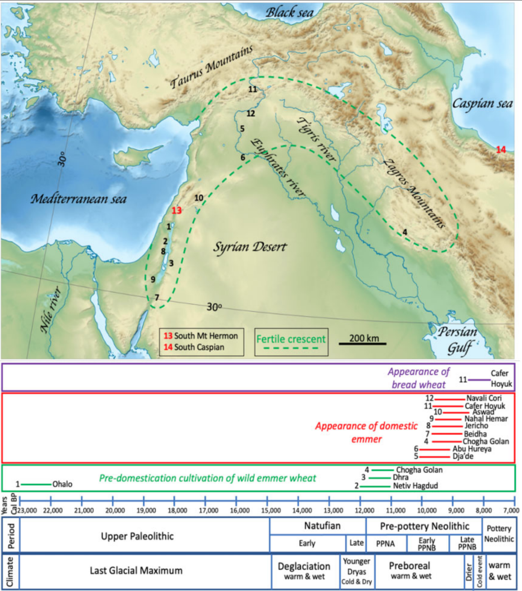
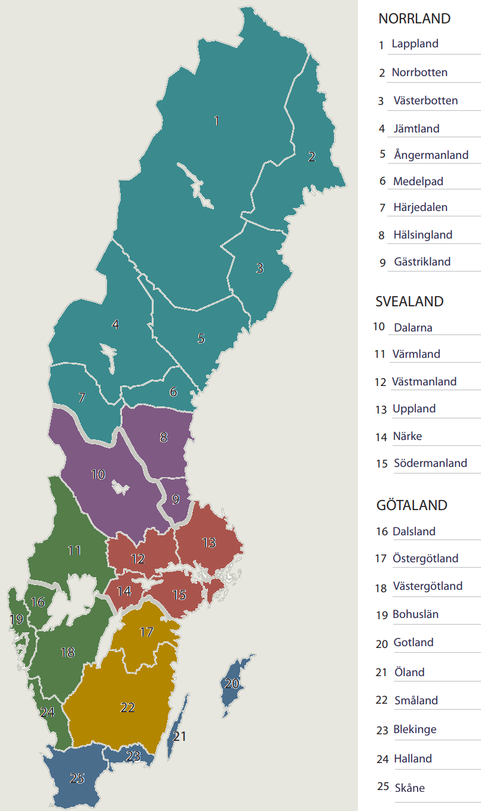

Brödets historia, en översikt
Brödets historia började för över 14 000 år sedan med enkla flatbröd gjorda på malda frön. Ett stort genombrott kom i Egypten där man började använda jäst för att göra bröden luftiga, en kunskap som sedan spreds till Romarriket där storskaliga bagerier blev vanliga. Den industriella revolutionen på 1800-talet förändrade allt med ångdrivna kvarnar som kunde producera fint, vitt mjöl, vilket gav ännu luftigare bröd. Samtidigt gjorde uppfinningar som bakpulver och kommersiell jäst bakningen enklare för alla. Under 1900-talet blev bekvämlighet centralt, med produkter som färdigskivat bröd och bake-off.
I Sverige har bröd bakats sedan 200-talet, och landets långa form skapade unika regionala traditioner. Detta ledde till torra, hållbara bröd i norr och mjukare, färskare bröd i söder. De senaste decennierna har svenska brödtrender svängt kraftigt. Från 70-talets kampanjer för att äta mer bröd till senare tiders LCHF-dieter, har hembakning med surdeg nu återigen blivit mycket populärt.
Äldre stenåldern till antiken
För ca 14 400 år sedan, i vad som idag är norra Jordanien, har man hittat brödliknande rester i arkeologiska utgrävningar. Det var flatbröd bakade på de frön och korn som fanns att tillgå blandat med rötter från gräset som växte på platsen. Man hade malt fröna genom att krossa dem mellan stenar och sedan siktat bort de större bitarna. Från vad vi vet idag kan vi säga att brödbakning tog sin början i den bördiga halvmånen i olika steg mellan 23 000 år sedan och 8 000. Till en början försökte man odla vild emmer (en vetesort) vilken man senare lyckades förädla till sorter som gav större skördar. För ca 9 000 år sedan dök de första bakugnarna upp vilket gav människor nya förutsättningar för att baka sina bröd, jämfört med över öppen eld som främst använts tidigare.
I det egyptiska riket bakades inte bara flatbröd utan även formbröd och man nyttjade spontanjäsning för att få luftigare bröd. Detta tros ha utvecklats vid samma tid som man började brygga öl vid bryggerier och med tiden sparade man jäst deg från en bakning till nästa för att starta jäsningsprocessen. Huvudråvaran var fortfarande emmervete men även korn användes. Som smaksättare har man hittat spår av dadlar, fikon och koriander. Detta sätt att baka bröd spred sig sedan till de större städerna i Grekland och blev på så vis en del av den grekiska matkulturen. I Romarriket fanns det, runt början av vår tideräkning, 329 bagerier i Rom som försörjde en befolkning på ca 1 miljon med bröd dagligen. Det var grekerna som arbetade i och drev många av dessa bagerier baserat på de tekniker de lärt sig av egyptierna. Som råvaror användes främst vetekorn som importerades från andra delar av Romarriket och malningen till mjöl skedde i bagerierna.
Till en början skedde all malning med hjälp av handkraft, i så kallade gnidkvarnar. De kan liknas lite vid en mortel där botten består av en skålformad sten och sedan har man en rund/oval sten ovanpå som man för runt för hand för att mala säden som ligger i skålen. Större kvarnar utvecklades med två stora stenar som kornen maldes mellan. Den undre stenen låg stilla medan den övre roterade runt ovanpå. Till en början var den människor som drev runt stenarna men man använde även djur som fick sköta dragjobbet. Runt år 0 utvecklade grekerna skvaltkvarnen vilken var en vattendriven kvarn som malde säden mellan två större stenar. Vindkraft introducerades som drivkraft för ca 1000 år sedan. Det var inte förrän i samband med den industriella revolutionen och ångkraften som detta förändrades i större grad.
Den industriella revolutionen
Vi kommer nu att hoppa fram till 1800-talet och den industriella revolutionen. Självklart hände det saker inom brödbakning mellan Romarriket och ångkraftens intåg. Man provade att baka med olika värmekällor, former och ingredienser men då detta skiljde sig regionalt kommer det tas upp mer i stycket om brödbakning i Sverige. Nu när industrin började ta fart och fokus i Europa var mycket riktat till utveckling och modernisering, gjordes flera större skiften inom brödbakning.
Ångkraften blev det primära sättet att driva kvarnarna och 1834 infördes valskvarnen vilken pressar kornen mellan två valsar istället för att de mals sönder mellan två stenar. Vid valsmalning separeras själva mjölkroppen (där mjölet finns) från resterande delar av kornet. Dvs det går att få ett "rent" vetemjöl (kärnvetemjöl) vilket vi är vana vid idag till skillnad från stenmalet som tar med hela kornet, skal och allt vilket i regel blir ett fullkornsmjöl. Det går att separera delarna i ett stenmalt mjöl för att få ut ett kärnvetemjöl men det görs i regel inte. Det färdiga mjölet gav alltså bättre bakegenskaper (luftigare och större bröd) och blev det primära mjölet för brödbakning. Dock användes fortfarande fullkornsmjöl vid bakning av vissa bröd och Sylvester Graham, som har fått grahamsmjölet uppkallat efter sig, var en stark drivkraft för detta i USA.
Under mitten av 1800-talet uppfanns och introducerades bakpulvret, ett kemiskt sätt att få högre kakor och bröd. Engelsmannen Alfred Bird var den första att ta fram ett kommersiellt bakpulver år 1843 och det reagerade så fort det kom i kontakt med fukt. Då han inte tog något patent på upptäckten fortsatte andra i hans spår och utvecklade andra varianter. Till slut kom dagens variant fram, vilken reagerar på en kombination av syra och värme för att producera koldioxid. Därav är det en vanlig företeelse att man i recept på filmjölksbröd ser att bikarbonat eller bakpulver används istället för jäst. Fram till 1847 använde man jäst-resterna från bryggerier vid brödbakning men i Wien ändrade bryggarna sina metoder och det blev en akut brist på jäst till bagerierna. Man började producera egen jäst avsedd för bagerierna och man tog fram "Vienna bread process" där man utvecklade brödbakningen på ett sätt som påminner om dagens bröd. Med tillgång till högkvalitativt Ungerskt vete och valsmalning tog man fram ett extra proteinrikt och siktat mjöl med utmärkta bakegenskaper. I kombination med den nya jästen och att man introducerade vattenånga vid bakningen fick man fram luftiga bröd med en krispig skorpa.
Den franske forskaren Louis Pasteur studerade fermentation under mitten av 1800-talet och hur mikroorganismer som jästsvampar förökade sig och producerade bland annat alkohol och koldioxid. På 1860-talet tog han fram en jäst för ölbryggning som visade sig vara lika väl lämpad för brödbakning och som kunde produceras i större mängder för ökad tillgänglighet. Dock dröjde det fram till 1920-talet innan det gjordes tillgängligt för privatpersoner som "jäst i paket" vilka vi ser idag.
Mot slutet av 1800-talet när man i nordamerika expanderade västerut kom man över bördiga landskap i dagens Kanada och USA vilka var väl lämpade för veteodling. Vetet som odlades där hade en högre proteinhalt än mycket av det som odlades i Europa men framförallt kunde det produceras i större mängder tack vara de stora arealerna som fanns att tillgå. Det gjorde Kanada och USA till stora exportörer av just vetemjöl till västeuropa.
Världskrigen och 1900-talet
I samband med att första världskriget bröt ut skiftade brödet fokus i europa. Från att ha velat ha luftiga och välsmakande bröd gick längderna över till att öka energi- och näringsinnehållet. De stora importerna från nordamerika minskades drastiskt och man övergick till lokalt producerat fullkornsmjöl. En insikt som gjordes var att lägga en så pass stor del av sin livsmedelsproduktion på import var väldigt riskabelt under kris och krigstider och man började ställa om till mer inhemsk produktion av spannmål. I Storbritannien utvecklades 1961 "The Chorleywood bread process" som tog inhemskt mjöl med lägre proteinhalt och skapade en deg med jäst, salt och lite tillsatser vilken, istället för att knådas blandades snabbt i 3-4 minuter på 360 varv per minut. Under blandningen ändrade man lufttrycket till och från vakuum vid flera tillfällen för att det skulle bildas luftfickor i degen. Processen var effektiv och på 3,5-4 timmar kunde man ta fram ett bröd, avsvalnat och klart för att skeppas till butik. Mycket bröd som produceras i England idag är fortfarande enligt denna process.
På 1900-talet utvecklades flera bekvämligheter för konsumenterna, 1919 lanserades brödrosten men först 1928 började färdigskivat bröd säljas till konsument. Under 1970-talet utvecklades bake-off teknologin vilken går ut på att bröd/frallor gräddas delvis/eller inte alls i fabriken och sedan gräddas färdigt i hemmet eller i en närbutik för att flytta känslan av nybakat närmare konsumenterna.
Svensk brödhistoria
Det äldsta brödet som hittats i Sverige är kornbullar från 200-talet e.v.t., funna på Helgö i Mälaren. I samma område har man hittat roterande handkvarnar för att mala kornen, och dessa var av samma modell som användes i den romerska armén. Ett antagande man gjort är att svenskar som tjänstgjort i den romerska armen tagit med sig handkvarnarna och brödbakningstekniken tillbaka till Sverige när deras tjänstgöring tagit slut. Från 500-talet har man hittat kornbröd i gravar vilka då skickats med de döda. Under vikingatiden bakades främst flatbröd på korn men det kunde även förekomma inblandning av ärtmjöl och mald bark. Först på 700-talet började man odla råg i södra Sverige vilket sedan spred sig norrut och introducerades då även i brödbakningen.
I Sverige fanns en stor variation av olika sorters bröd och man kan säga att det är ca 400 olika sorter. De stora variationerna beror på att Sverige är ett avlångt land med flera olika förutsättningar för att odla sädeslag, mala korn och förvaring av bröd. I regel producerades alla ingredienser lokalt och det konsumerades även lokalt. Stora skogar separerade befolkningen från varandra medan sjövägar blev handelsvägar och därigenom kunde sädeslag, recept och metoder delas. I och med detta kan man dela in Sverige i sex olika brödregioner. Intressant nog har fyra av dess regioner liknande kulturer i andra länder.
| Region | Färg | Huvudingrediens | Karaktär | Brödsorter | Internationell anknytning |
|---|---|---|---|---|---|
| Sydsvenska | Blå | Tyskråg | Skållad råg & surdegsjäsning | Kavring, ankarstock & ölands- och gotlandslimpa | Danmark & Tyskland |
| Västsvenska | Grön | Korn, havre, potatis, ärtor & bönor | Nästan ojästa flatbröd | Tekakor, Hönökakor, lefsor & skrädbröd | Norge & västra och norra Storbritannien |
| Småland & Östergötland | Gulorange | Råg, havre, ärtor & potatis | Brödkryddor (anis, kummin) & lingon | Slaglimpa & torkade hålkakor | |
| Mälardalen | Röd | Ryssråg | Förrådsbröd, två gånger om året-bak | Upplandskubb & Finskt rågbröd | Åland, Södra Finland, Baltikum, Ryssland, Ukraina & Polen |
| Knäckebrödsbältet | Lila | Råg | Spisbröd, två gånger om året-bak | Rågknäcke | |
| Tunnbrödsregionen | Ljusblå | Korn, bark & potatis | Tunna, ojästa liknande utkavlad gröt, två gånger om året-bak | Ljusugnsbröd, mjukt tunnbröd & rieskor | Norra Finland, Mellanöstern (pitabröd) & Norra Indien (naanbröd) |
Två gånger om året-bak som, förekommer i norra delen av landet, betyder att man bakar bröd två gånger per år. I dessa regioner maler man mjölet med vattenkraft och vid vårfloden och höstregnet är det tillräckligt mycket vatten för att driva kvarnarna och i sin tur producera mjölet. Därav mer kompakta, torrare bröd som kunde lagras större delen av året. När dessa bröd sedan skulle ätas lades de ofta i blöt innan. I södra delen av landet drevs kvarnarna i större utsträckning av vindkraft (vindmöllor) vilket gav en jämnare tillförsel över året.
Allt eftersom de svenska städerna blev större började bagerier ta plats. I Visby fanns det bagerier på 1200-talet och i Stockholm dök de upp på 1400-talet. Ofta var det grövre rågbröd och finare vetebröd som bakades och det fanns en nationell styrning som sade att bröden skulle hålla en viss vikt och säljas till ett styrt pris. Bröden som bakades kunde vara antingen surdegsjästa eller jästa med bryggerijäst.
Nu blir det ett hopp fram till 1900-talet då vi ser hur brödbakning och brödkonsumtion förändrats i Sverige. På 1970-talet lanserades en kampanj av Brödinstitutet där socialstyrelsen ville att man skulle äta 6-8 skivor bröd per dag. Detta gav ett uppsving för brödkonsumtionen. Brödmaskinen, som blev årets julklapp 1988, gav ett tillfälligt uppsving för brödet då man kunde hälla i alla ingredienser på kvällen och sedan njuta av nybakat bröd morgonen efter. 2000-talet kom LCHF-dieten vilken går ut på att man ska äta lite kolhydrater och istället mer fett, dvs går den inte ihop med bröd. Nya tag blev det på 2010-talet då surdegsbakning blev populärt och även under coronapandemin då fler blev isolerade hemma och började baka mer bröd själva. Enligt källor från Jordbruksverket har konsumtionen av knäckebröd halverats från 6,6 kg per person per år mellan 1960 och 2021 medan konsumtionen av mjukt bröd ökat från 30,9 kg till 51,8 kg.